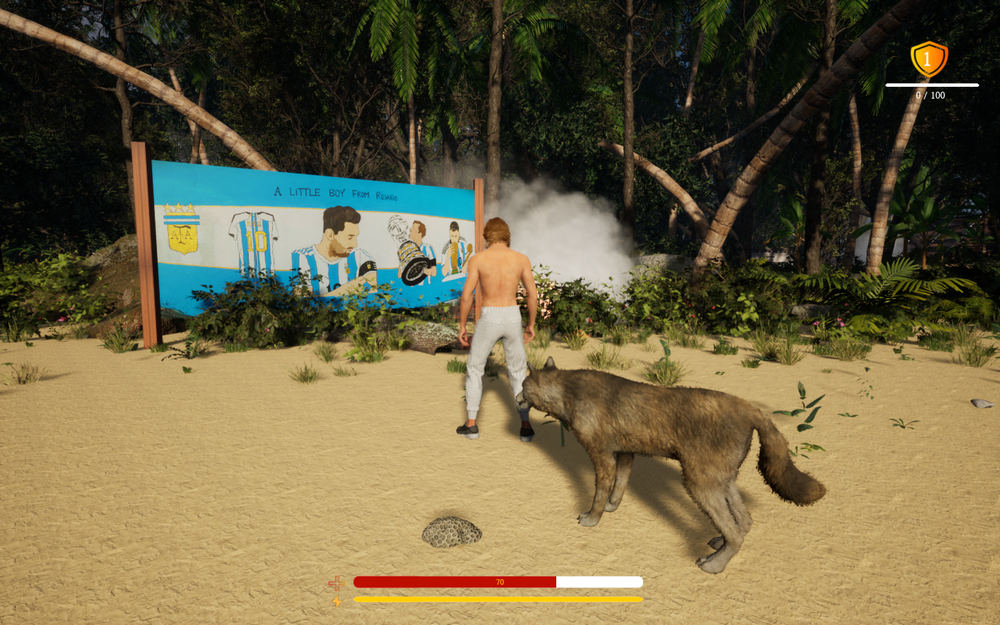

"I began developing Lone Acreage Island, an open-world survival game, 10 months ago using Unreal Engine. To design the map, I utilized free assets from the Unreal Marketplace and Quixel Bridge. All game mechanics, including the animal AI system, NPC system, fighting mechanics, inventory, equipment, and weather effects, were implemented by following tutorials. There is another slide named Lone Acreage Desert all mechanisms are same but the only difference is map that is another level Desert
Lone Acreage Island features a complex survival system where players must manage their inventory, equipment, and resources to stay alive. The game’s AI-driven world includes hostile enemies, animals with realistic behavior, and NPCs that interact with the player and environment. A companion system allows players to bond with and rely on an animal companion for assistance. Additionally, the dynamic weather, including a rain system, with changing conditions impacting visibility, resource availability, and AI behavior.
The island’s rich, detailed environments are brought to life with high-quality textures, dynamic lighting, and realistic weather effects.
Developed using Unreal Engine, Lone Acreage Island leverages advanced AI frameworks to create challenging enemies and lifelike animal behaviors. The game’s inventory and equipment systems were carefully designed to balance resource management with exploration. One of the key challenges was integrating the AI systems with the dynamic weather and environment, ensuring that NPCs, enemies, and animals react in realistic ways.